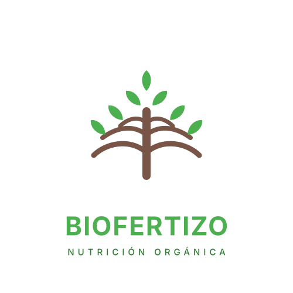

Biofertizo — Planta Piloto de Bioinsumos (I+D+i / Bootstrapping)
Planta piloto bootstrapping con $1.5M COP. Margen bruto >85%. 1 galón (3.8L) cubre 1 Ha. Know-How propietario de quelatación metabólica.
Formulación & Estrategia
Categoría: C — Innovación, Transformación Digital y Gestión del Cambio
Métricas de Gestión: $1.500.000 COP inversión propia (Bootstrapping) | 1.000 L/mes capacidad | Margen bruto >85% (estructura Lean / Cero OPEX de nómina) | 1 galón (3.8L) cubre 1 Hectárea | 0 financiamiento externo
Punto de Quiebre: Dependencia de insumos agrícolas comerciales de alto costo y baja eficiencia de absorción, generando barreras económicas para pequeños y medianos productores agroindustriales.
Intervención Estratégica:
- Diseñé y monté biorreactores anaeróbicos de operación manual/mecánica mediante ensamblaje propio (soldadura y construcción), logrando una planta funcional con $1.5M COP (Bootstrapping).
- Estructuré modelo de negocio de altísima rentabilidad operando bajo esquema Lean (sin nómina inicial), garantizando margen bruto superior al 85% mediante eliminación de intermediarios y optimización de biomasa local.
- Desarrollé proceso propietario de quelatación metabólica (Know-How protegido), generando bioinsumos concentrados de altísima absorción foliar/edáfica.
- Validé dosis de aplicación ultra-eficiente (1 galón / Hectárea), reduciendo drásticamente costos logísticos y de aplicación frente a fertilizantes tradicionales.
Escalabilidad / Evidencia: Modelo productivo y Know-How propietario viable para escalamiento corporativo o Joint Ventures. La transferencia tecnológica aplica únicamente bajo estructuración de licencias comerciales o contratos de gran envergadura en cooperativas y empresas agroindustriales.